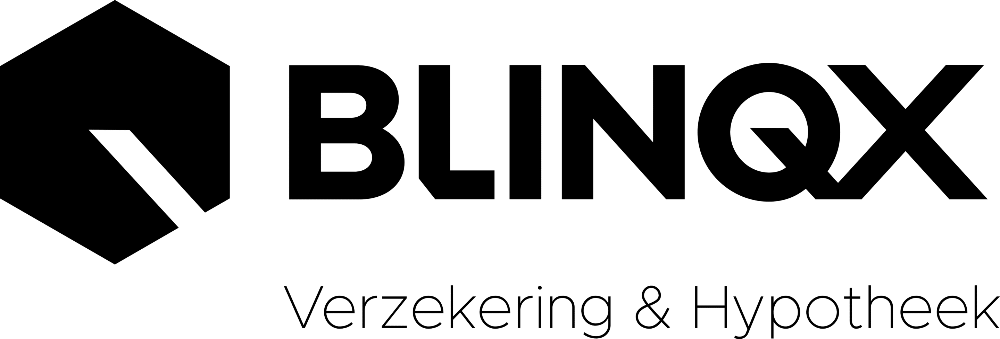

Editie 2026
Elke hypotheek is een verzekeringsgesprek.
Het hypotheektraject is hét natuurlijke moment om schadeverzekeringen te adviseren en te sluiten. Blinqx helpt je op te starten: een vaste workflow, premievergelijking in je eigen omgeving, en desgewenst een partner die de service overneemt.
De klant zit al aan tafel. Het gesprek ligt er al.
Bij elke hypotheek hoort een woning die verzekerd moet worden — de opstalverzekering is zelfs een voorwaarde van de geldverstrekker. Toch verdwijnt dat gesprek vaak in de drukte van het passeren, en sluit de klant zijn verzekeringen ergens anders. Zonde: het vertrouwen is er, de gegevens zijn er, en het moment is er.
Op het rente- of bindend aanbod koppel je verzekeringen aan ontzorging: “wij kijken kosteloos naar je totale verzekeringspakket — met jouw toestemming.”
In de workflow worden de schadeverzekeringen vóór het passeren benoemd. De opstalverzekering benoemt de adviseur verplicht — zo mist geen enkel dossier dit gesprek.
Woning, waarde, inboedelsituatie en gezinssamenstelling zitten al in het hypotheekdossier. Eén uitvraag extra — de huidige polisbladen — en je kunt vergelijken.
Elke gesloten polis bouwt aan een schadeportefeuille met doorlopende provisie — en aan een klant die vaker contact heeft met jouw kantoor.
Wie hypotheek én verzekeringen bij jou heeft, stapt niet zomaar over. Elk contactmoment over een polis is een contactmoment onder jouw naam.
Vergelijken, sluiten en service hoeven niet op jouw bord: de software doet het rekenwerk en een uitbestedingspartner kan de rest doen.
Meer verzekeringen verkopen begint niet met harder verkopen — maar met het moment dat er al is.
Eén vaste route, in elk hypotheekdossier.
De speciale workflow legt het verzekeringsgesprek vast als stap in je hypotheektraject. Geen losse notities of geheugenwerk: het dossier dwingt de route af en legt vast wat er is besproken.
De opstalverzekering wordt in elk dossier benoemd — de workflow bewaakt het, de adviseur voert het gesprek.
Premie berekenen en direct afsluiten.
Met Premievergelijk vergelijk je alle gangbare schadeverzekeringen — auto, woonhuis (opstal), inboedel, aansprakelijkheid, rechtsbijstand, reis en meer — en sluit je direct af. In het pakket zie je meteen de totaalpremie en de pakketkorting.

Jij rekent mee tijdens het gesprek, of de klant vergelijkt en sluit zelf online — in jouw huisstijl, op jouw site.
Losse polissen bundel je tot één pakket met één incasso; oude polissen worden opgezegd.
Gesloten polissen landen automatisch in eBlinqx — geen overtypen, geen losse administratie.
Dezelfde vergelijking gebruik je bij prolongatie en actief klantbeheer: elk jaar een reden voor contact.
Jij informeert of adviseert. De rest kun je uit handen geven.
Bang voor de servicelast van een schadeportefeuille? Niet zelf willen afsluiten? Via eBlinqx backoffice & uitbesteden en de Wft-uitbestedingspartner M+ wordt je binnendienst geregeld — herkenbaar onder jouw naam, vastgelegd in jouw eigen eBlinqx-omgeving. Via de verzekeraar die jij wil.
Keuzemenu: toets 1 hypotheken, toets 2 verzekeringen en schademeldingen — binnen ± 20 seconden bij de servicedesk.
De klant mailt jouw mailbox; de afhandeling volgt de afgesproken SLA en wordt gerapporteerd op tijd, aantal, kanaal en reden.
Nieuwe verzekeringen afsluiten, bestaande polissen oversluiten en bundelen tot één pakket — inclusief opzeggen van de oude polissen.
Van registratie van de melding tot afronding van het claimproces — de klant merkt alleen dat het geregeld wordt.
Periodiek onderhoud op de portefeuille, zodat dekking en premie blijven passen bij de situatie van de klant.
Elke vraag, polis en schademelding wordt vastgelegd in jouw eigen eBlinqx-omgeving — de portefeuille blijft van jou.
Je bepaalt zelf welke taken je uitbesteedt en wanneer. De medewerkers zijn Wft-gediplomeerd en kennen eBlinqx door en door — de overdracht sluit naadloos aan op jouw manier van werken.
Start met je schadeportefeuille.
We richten de workflow, de documentuitvraag en Premievergelijk samen met je in — en verbinden je desgewenst met de uitbestedingspartner.
Hullenbergweg 109, 1101 CL Amsterdam